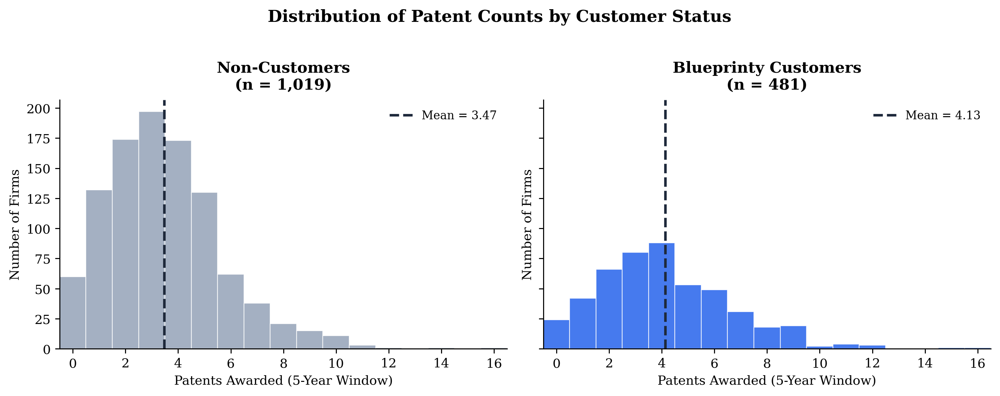
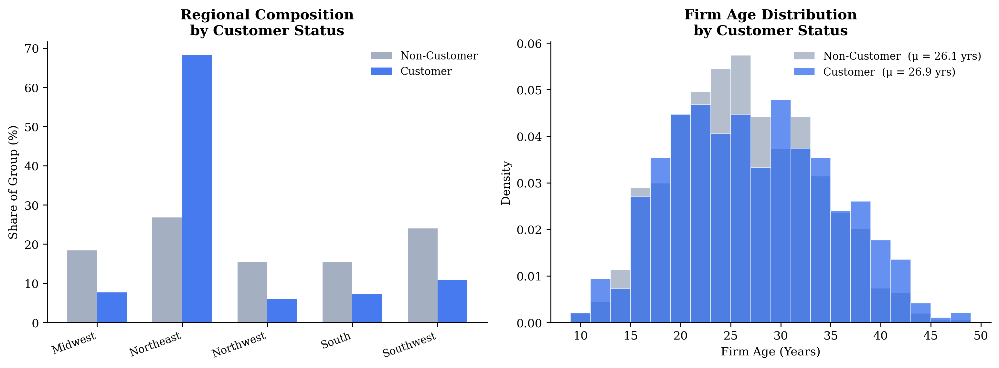
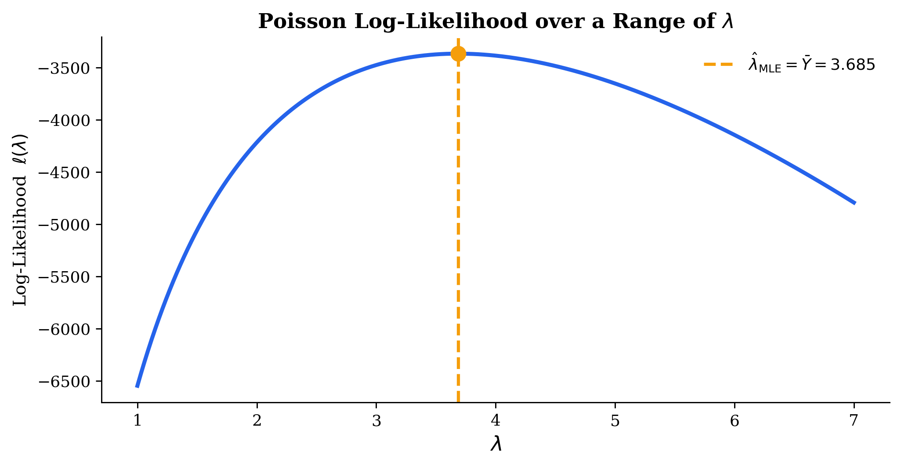
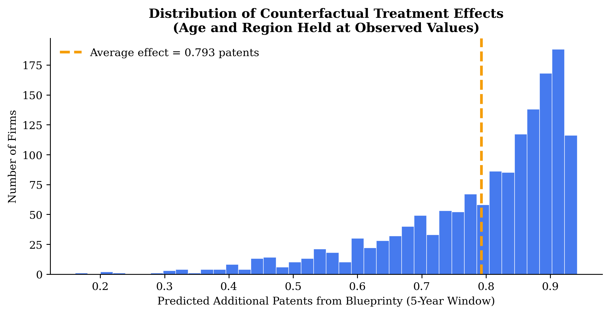

format: html: toc: true toc-depth: 3 code-fold: show theme: cosmo highlight-style: github self-contained: true
Introduction
Does better software lead to more patents? That is the central question Blueprinty — a small firm that makes blueprint-drafting software tailored for US patent applications — wants its marketing team to answer.
The intuition is simple: Blueprinty’s software streamlines the blueprint-preparation process required by the US Patent Office. If it genuinely improves submission quality, firms using it should receive more patent approvals. To investigate, Blueprinty assembled data on 1,500 mature (non-startup) engineering firms, recording the number of patents each firm earned over the last five years, its geographic region, its age since incorporation, and whether it subscribes to Blueprinty.
The complication is that Blueprinty’s customers are not randomly assigned. Firms that seek out a specialized patent-drafting tool may already be more patent-active, better resourced, or clustered in innovation-dense regions. Any raw comparison of patent counts between customers and non-customers therefore confounds the effect of the software with pre-existing differences between the firms that adopted it. To make a credible marketing claim we need a model that holds firm characteristics constant — which is exactly what Poisson regression, estimated by maximum likelihood, lets us do.
Exploring the Data
Patent Counts by Customer Status
Blueprinty customers average 4.13 patents over the five-year window, compared with 3.47 for non-customers — a gap of about two-thirds of a patent. Both distributions are right-skewed and concentrated in the 0–6 range, which is exactly the kind of count data that motivates a Poisson model. The raw difference looks meaningful, but we cannot attribute it to the software until we check whether customers and non-customers differ along other dimensions.
Regional and Age Differences

Two patterns stand out. First, customers are heavily concentrated in the Northeast: 68% of all customers are Northeast firms, versus only 27% of non-customers. Second, customers are modestly younger on average (26.9 years vs. 26.1 years).
Both differences matter for what follows. If Northeast firms patent more actively — perhaps because that region concentrates innovation hubs — the customer group’s higher patent counts may partly reflect geography, not software. Similarly, if mid-life firms are at peak patenting productivity, the customer age skew could inflate the raw comparison. Controlling for both in a regression lets us isolate the marginal association with Blueprinty.
A Simple Poisson Model via Maximum Likelihood
Why Poisson?
Patent counts are non-negative integers — the Normal distribution, which assigns positive probability to negative and fractional values, is a poor structural fit. The Poisson distribution is defined on \(\{0, 1, 2, \ldots\}\), has a single positive parameter \(\lambda\) equal to both its mean and variance, and arises naturally from models of events occurring at a constant rate. It is the textbook starting point for count outcomes like patent awards.
Deriving the Log-Likelihood
Each firm’s count \(Y_i\) is modeled as an independent draw from \(\text{Poisson}(\lambda)\):
\[ f(Y_i \mid \lambda) = \frac{e^{-\lambda}\,\lambda^{Y_i}}{Y_i!} \]
The joint likelihood for \(n\) independent observations is the product of the individual densities:
\[ L(\lambda \mid \mathbf{Y}) = \prod_{i=1}^{n} \frac{e^{-\lambda}\,\lambda^{Y_i}}{Y_i!} \]
Taking the natural log converts the product into a tractable sum:
\[ \ell(\lambda) = \sum_{i=1}^n \left(-\lambda + Y_i \log \lambda - \log(Y_i!)\right) = -n\lambda + \log(\lambda)\!\sum_{i=1}^n Y_i - \sum_{i=1}^n \log(Y_i!) \]
Analytical MLE. Differentiating with respect to \(\lambda\) and setting equal to zero:
\[ \frac{d\ell}{d\lambda} = -n + \frac{\sum_i Y_i}{\lambda} = 0 \implies \hat{\lambda}_{\text{MLE}} = \frac{1}{n}\sum_i Y_i = \bar{Y} \]
The MLE is simply the sample mean — sensible, since \(\lambda\) is the population mean of a Poisson.
Coding and Plotting the Log-Likelihood
Code
Y = d['patents'].values
def poisson_loglikelihood(lam, Y):
"""Log-likelihood for Y ~ Poisson(lambda)."""
if lam <= 0:
return -np.inf
return np.sum(-lam + Y * np.log(lam) - gammaln(Y + 1))
The curve has a single smooth peak. The maximum sits exactly at \(\hat{\lambda} = \bar{Y}\), as predicted analytically. Values of \(\lambda\) that are too small assign too little probability to the many firms with multiple patents; values that are too large over-predict counts for the zero-and-one firms. The MLE balances these competing forces.
Numerical Confirmation
Code
result_simple = minimize(
lambda x: -poisson_loglikelihood(x[0], Y),
x0=[3.0],
method='Nelder-Mead'
)
lambda_mle = result_simple.x[0]
print(f"Numerical MLE: λ̂ = {lambda_mle:.6f}")
print(f"Sample mean: Ȳ = {Y.mean():.6f}")Numerical MLE: λ̂ = 3.684668
Sample mean: Ȳ = 3.684667The numerical optimizer and the closed-form formula agree to six decimal places — as expected, since the log-likelihood has a unique global maximum and the analytical solution pins it down exactly.
Poisson Regression
From a Single \(\lambda\) to Firm-Specific Rates
The simple model treats every firm as exchangeable. To use our covariate information we extend it so that each firm \(i\) has its own rate:
\[ Y_i \sim \text{Poisson}(\lambda_i), \qquad \lambda_i = \exp(X_i'\beta) \]
The exponential link is essential: the linear predictor \(X_i'\beta\) can take any real value, but \(\lambda_i\) must be strictly positive. Exponentiating guarantees positivity. Each coefficient \(\beta_j\) is the log of a multiplicative factor on the expected count — a one-unit increase in \(x_j\) multiplies \(\lambda_i\) by \(e^{\beta_j}\).
The Regression Log-Likelihood
Replacing the scalar \(\lambda\) with \(\exp(X_i'\beta)\):
\[ \ell(\beta) = \sum_{i=1}^n \left[-\exp(X_i'\beta) + Y_i\,(X_i'\beta) - \log(Y_i!)\right] \]
Code
def poisson_regression_loglikelihood(beta, Y, X):
"""Log-likelihood for Poisson regression Y ~ Poisson(exp(X @ beta))."""
eta = np.clip(X @ beta, -500, 500) # guard against overflow
return np.sum(-np.exp(eta) + Y * eta - gammaln(Y + 1))Building the Design Matrix
Code
# South is the omitted (reference) region
region_dummies = pd.get_dummies(d['region'], drop_first=False).drop(columns=['South'])
X_df = pd.concat([
pd.Series(np.ones(len(d)), name='intercept'),
d[['age']],
(d['age'] ** 2).rename('age_sq'),
region_dummies,
d[['iscustomer']]
], axis=1)
X = X_df.values.astype(float)
print(f"Design matrix: {X.shape[0]} firms x {X.shape[1]} columns")
print(f"Columns: {X_df.columns.tolist()}")Design matrix: 1500 firms x 8 columns
Columns: ['intercept', 'age', 'age_sq', 'Midwest', 'Northeast', 'Northwest', 'Southwest', 'iscustomer']Why include age-squared? Patenting activity is unlikely to increase linearly with firm age throughout the entire life cycle. Young firms are still building R&D pipelines; established mid-life firms often reach peak patent productivity; very old firms may have diversified away from core innovation. A quadratic in age captures this hump-shaped pattern without imposing a strong assumption about where the inflection lies.
Why drop one region dummy? The five region indicators sum to 1 for every observation — identical to the intercept column. Including all five would make the design matrix rank-deficient (perfect collinearity). Dropping South makes it the reference category: every other regional coefficient measures the difference in log-expected patents relative to a Southern firm, all else equal.
Estimating \(\hat\beta\) with scipy.optimize
Code
# Warm-start from GLM to ensure numerical stability
glm_init = sm.GLM(Y, X, family=sm.families.Poisson()).fit()
result_reg = minimize(
lambda b: -poisson_regression_loglikelihood(b, Y, X),
x0=glm_init.params.copy(),
method='L-BFGS-B',
options={'maxiter': 10_000, 'ftol': 1e-12}
)
print(f"Optimizer converged: {result_reg.success}")Optimizer converged: TrueStandard errors from the Hessian. Near the MLE the log-likelihood surface is locally quadratic, so the second-derivative matrix (Hessian) captures how sharply peaked it is in each parameter direction. A sharper peak means less uncertainty. The asymptotic covariance matrix of \(\hat\beta\) is the inverse of the negative Hessian:
\[ \widehat{\operatorname{Var}}(\hat{\beta}) \approx \left[-\nabla^2 \ell(\hat{\beta})\right]^{-1} \]
Code
def neg_ll(b):
return -poisson_regression_loglikelihood(b, Y, X)
# Approximate Hessian via finite differences
eps = 1e-5
n_p = len(result_reg.x)
H = np.zeros((n_p, n_p))
for i in range(n_p):
def grad_i(b, i=i): # capture i by value
return approx_fprime(b, neg_ll, eps)[i]
H[i] = approx_fprime(result_reg.x, grad_i, eps)
se_optim = np.sqrt(np.diag(np.linalg.inv(H)))Comparison with statsmodels GLM
Code
glm_fit = sm.GLM(Y, X, family=sm.families.Poisson()).fit()| Variable | optim() | statsmodels GLM | ||
|---|---|---|---|---|
| β̂ | SE | β̂ | SE | |
| Intercept | -0.4524 | 0.1812 | -0.4524 | 0.1829 |
| Age | 0.1486 | 0.0137 | 0.1486 | 0.0139 |
| Age² | -0.0030 | 0.0003 | -0.0030 | 0.0003 |
| Midwest | -0.0566 | 0.0527 | -0.0566 | 0.0527 |
| Northeast | -0.0274 | 0.0451 | -0.0274 | 0.0451 |
| Northwest | -0.0741 | 0.0551 | -0.0741 | 0.0551 |
| Southwest | -0.0060 | 0.0487 | -0.0060 | 0.0487 |
| Is Customer | 0.2076 | 0.0309 | 0.2076 | 0.0309 |
The coefficient estimates from optim() and sm.GLM() are identical to four decimal places — a reassuring sanity check. The standard errors are very close but not exactly equal: sm.GLM() uses the analytically computed expected Fisher information matrix, while our approach approximates the Hessian numerically via finite differences. This small discretization error explains the minor discrepancy, but it does not change any substantive conclusion.
Interpreting the Coefficients
| Variable | β̂ | SE | exp(β̂) |
|---|---|---|---|
| Intercept | -0.4524 | 0.1829 | 0.6361 |
| Age | 0.1486 | 0.0139 | 1.1602 |
| Age² | -0.0030 | 0.0003 | 0.9970 |
| Midwest | -0.0566 | 0.0527 | 0.9450 |
| Northeast | -0.0274 | 0.0451 | 0.9730 |
| Northwest | -0.0741 | 0.0551 | 0.9285 |
| Southwest | -0.0060 | 0.0487 | 0.9940 |
| Is Customer | 0.2076 | 0.0309 | 1.2307 |
Because the model is log-linear, each \(\hat\beta_j\) is the log of a multiplicative factor on \(\hat\lambda_i\); exponentiating gives the rate multiplier per unit change in \(x_j\):
- Age (\(\hat\beta = 0.149\), \(e^{\hat\beta} \approx 1.16\)): expected patents rise with firm age — each additional year multiplies the rate by ~1.16, all else equal.
- Age² (\(\hat\beta = -0.003\)): the negative quadratic confirms a concave life-cycle pattern — patenting accelerates early but eventually levels off as firms mature.
- Regional dummies: relative to the South, regional differences are modest and within roughly one standard error of zero across all regions.
- Is Customer (\(\hat\beta = 0.208\), \(e^{\hat\beta} \approx 1.23\)): the key finding. Controlling for age and region, Blueprinty customers are expected to receive ~23% more patents than otherwise identical non-customers. The coefficient is more than six standard errors from zero.
The Effect of Blueprinty’s Software
Average Marginal Effect via Counterfactual Prediction
The 23% multiplicative lift from the customer coefficient is harder to communicate than “X additional patents.” Moreover, the absolute effect varies across firms — a high-rate firm gains more patents in absolute terms from the same proportional boost than a low-rate firm does. To get a single interpretable number we use counterfactual prediction: predict each firm’s expected patent count with and without customer status, holding every other covariate at its observed value.
Code
beta_hat = result_reg.x
# Counterfactual 0: every firm set to non-customer
X0 = X.copy(); X0[:, -1] = 0
# Counterfactual 1: every firm set to customer
X1 = X.copy(); X1[:, -1] = 1
y_hat_0 = np.exp(X0 @ beta_hat)
y_hat_1 = np.exp(X1 @ beta_hat)
ate = np.mean(y_hat_1 - y_hat_0)
print(f"Average treatment effect: {ate:.4f} additional patents over 5 years")Average treatment effect: 0.7928 additional patents over 5 years
The estimated average treatment effect is 0.793 additional patents over the five-year window. The distribution of firm-level effects is right-skewed — firms with higher base patent rates gain more in absolute terms — but the effect is positive for virtually every firm in the sample.
What This Analysis Does — and Does Not — Establish
The evidence is consistent with Blueprinty’s marketing claim: after controlling for firm age and region, customers patent at a meaningfully higher rate, gaining roughly 0.79 additional patents per five years. For a firm whose competitiveness depends on intellectual property protection, that is a non-trivial gain.
That said, this is an observational study, not a randomized experiment. Firms self-selected into Blueprinty’s software, and we cannot rule out every unobserved confounder — quality of in-house patent counsel, R&D budget, corporate culture around IP, or the intrinsic patentability of the firm’s technology. Any of these could partially explain the patent-count gap even after controlling for age and region.
The honest conclusion: the data are consistent with Blueprinty’s software improving patent success, and the association survives controls for the most salient confounders. A causal claim would require either a randomized rollout or a credible natural experiment generating as-good-as-random variation in adoption.